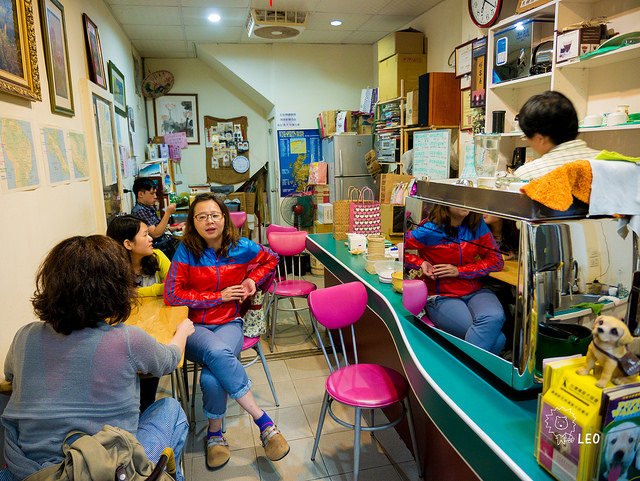
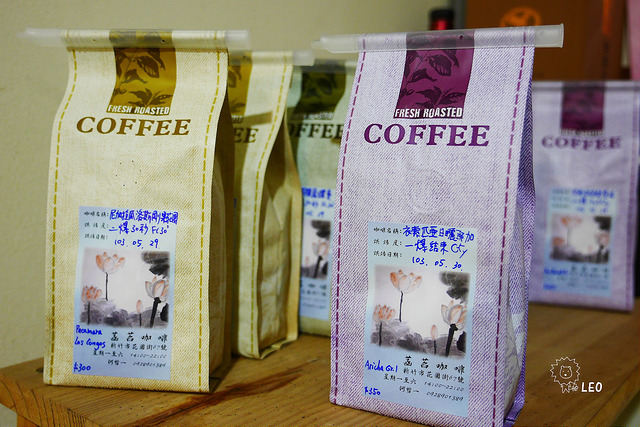

菡萏咖啡


在新竹的名氣也是挺大的，菡萏是相對其他咖啡店比較小間的, 而且位置也是在比較偏僻的花園夜市那，很難想像橋下的路旁會有一間咖啡館。 小歸小，簡陋歸簡陋，老闆何先生還是很努力的在維持店內的風格其實整間店就是品咖啡，不需要太多裝潢，不必吃氣氛就是喝咖啡。 這家店主要在賣咖啡豆, 老闆可是拿過挑豆冠軍呢, 而且每包咖啡豆非常便宜, 品質也非常良好, 有機會路過, 一定要進去買一包咖啡豆XDD